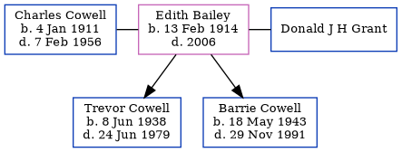

Edith Mary Grant (née Bailey) 1914 - 2006
[ Home ] | [ Calendar ] | [ Surnames Index ] | [ Census Index ] | [ Family History ]Edith Bailey, the wife of Charles John Cowell (the uncle of Nigel Horne), was born in Eastry, Kent, England on Feb 13, 19141 and was married twice - to Charles Cowell (c. May 1936 in Minster, Thanet, Kent, England) Donald J H Grant (c. May 1980 in Thanet, following the death of Charles John on Feb 7, 1956)2. She had 2 children, both with Charles Cowell: Trevor John and Barrie Ernest.
She died in 2006.
Children
- Trevor John was born on Jun 8, 1938
- Barrie Ernest was born on May 18, 1943
Citations
- England & Wales births 1837-2006 - Findmypast
- England & Wales, Marriage Index: 1916-2005 Online publication - Provo, UT, USA: The Generations Network, Inc., 2009.Original data - General Register Office. England and Wales Civil Registration Indexes. London, England: General Register Office. © Crown copyright. Published by permission of the Cont
Media
Thanet Advertiser - 6 Jun 1936

1939 Register Transcription - TNA-R39-1820-1820E-019-32
1939 Register Transcription - TNA-R39-1820-1820E-019-31
England & Wales marriages 1837-2008 - BMD/M/1936/2/AZ/000059/115
1939 Register Image - TNA-R39-1820-1820E-019
England & Wales births 1837-2006 - BMD/B/1914/1/AZ/000062/041
England & Wales Marriages 1837-2005 - BMD-M-1980-2-AZ-000319-136
Family Tree
Generated by ged2site. Last updated on Jun 11, 2024